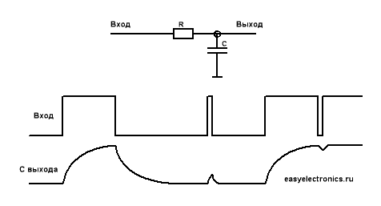
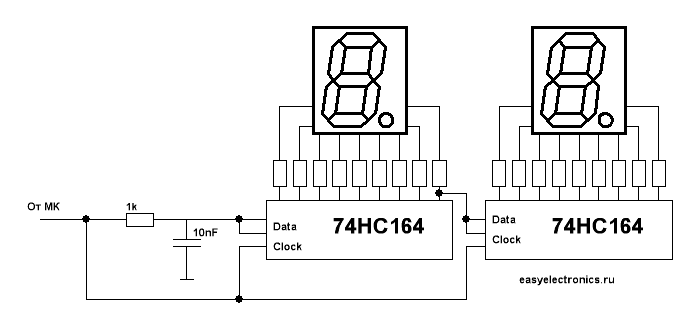
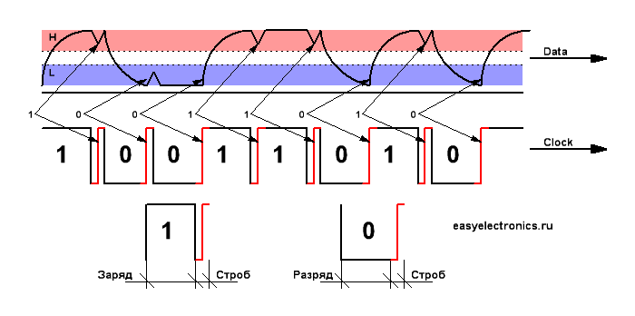
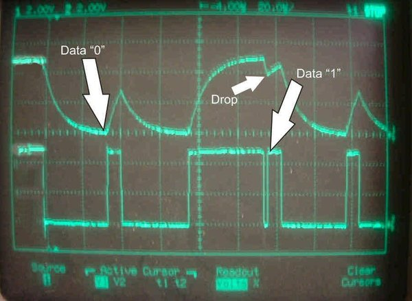

- Электроника для всех - http://easyelectronics.ru -
Управление семисегментными индикаторами по одному проводу
Автор DI HALT дата: 26 марта 2009 @ 0:25 в Начинающим | 94 комментариев
Часто бывает ситуация, когда надо выполнить простую задачу с которой справится даже грошовый контроллер вроде ATTiny12, но вот незадача - нужна индикация, а под какой нибудь семисегментный индикатор придется убить дофига выводов, а их всего восемь, из которых два питание, а один Reset. Можно, конечно, взять просто МК потолще, но мне больше по душе разные схемотехнические извраты. Вот и тут камрад Kalobyte подкинул ссылку на прикольную схему управления тройным (а в перспективе хоть десятерным) семисегментным индикатором по одному проводу.
Индикатор зажигается посредством [1] сдвигового регистра 74HC164, всего таких регистров можно навесить очень много, просто соединив по цепи несколько регистров. Если отбросить RESET, то для проталкивания данных в регистр нужны две линии - Data и Clock. Путем небольшого изврата можно эти две линии обьединить в одну.
Для начала немного теории
Обычная RC цепочка. Отличается тем, что напряжение на конденсаторе не
может измениться мгновенно. Время заряда и разряда зависит от емкости
кондера и сопротивления резистора. Оценить его можно по постоянной
времени T=R*C , это время за которое заряд изменится примерно втрое (в е=2.7 раз).
|  |
Если подадим короткий импульс, по времени намного меньше чем постоянная времени, то напряжение на конденсаторе изменится совершенно незначительно. Так, дрыгнется да и только. То же относительно короткой паузы. Незначительный провал и все возвращается на круги своя. Чуете куда я клоню?
Правильно!
У нас у регистра есть линия данных (Data) и линия строба (Clock). Когда уровень на Clock меняется с нуля на единицу (передний фронт) с линии Data
считывается текущий уровень. Их можно разнести по разные стороны RC
фильтра. И одни сигналы передавать узкими, другие широкими импульсами.
А теперь думаем. Строб един для всех регистров, а данные различные для разных битов. Поэтому строб будет всегда один, а данные будут меняться. Делаем строб узким и снимаем его до RC цепи. Узкие импульсы не могут пройти сквозь RC цепь, а данные передаем широкими импульсами, которые спокойно перезаряжают конденсатор. Данные мы снимаем после RC цепи.
Получается вот такая схема:
|  |
Осталось теперь хитрым образом формировать биты на линии. Чтобы было
понятней, я нарисовал поясняющую картинку, на которой показана передача
байта 10011010.
|  |
Ниже показаны типовые формы единицы и нуля. Как видишь, тут идет длинный импульс данных, который призван зарядить/разрядить конденсатор до нужного логического уровня, а потом краткий, как иголка, импульс строба. Причем в стробе нам важен только передний фронт.
|  |
Вот, взяли и применив копеечный регистр, сэкономили на микроконтроллере. Зажопили кучу выводов и получили моральное удоволетворение от извращенского метода :) Попутно вкурив в очередной пример применения конденсатора и интегрирующей цепочки.
Ссылки по теме:
Статья распечатана с Электроника для всех: http://easyelectronics.ru
URL статьи: http://easyelectronics.ru/upravlenie-semisegmentnymi-indikatorami-po-odnomu-provodu.html
URL-ы в этой записи:
[1] сдвигового регистра 74HC164, всего таких регистров можно навесить очень много, просто соединив по цепи несколько регистров: http://easyelectronics.ru/sdvigovyj-registr.html
[2] Оригинальная ветка форума, где я увидел эту схему (на немецком): http://www.mikrocontroller.net/topic/87149#new
[3]
Библиотека (Assembler) для Attiny12 для работы с 74HC164 таким макаром.
А также принципиальна схема индикатора на трех семисегментных, печатная
плата (Eagle). Взято с того же форума.: http://easyelectronics.ru/files/ReadySX/3x7Segment.zip
Нажмите здесь для печати.
Copyright © 2009 Электроника для всех. All rights reserved.